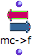
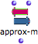

OpenMusic DocumentationHiérarchie de section : OM 6.6 User Manual > Score Objects > Presentation
OpenMusic DocumentationHiérarchie de section : OM 6.6 User Manual > Score Objects > Presentation
Navigation : page précédente | page suivante
Attention, votre navigateur ne supporte pas le javascript ou celui-ci à été désactivé. Certaines fonctionnalités de ce guide sont restreintes.
Score Objects Presentation

|
Score classes enclose the musical objects that compose a score : notes , chords , chord-seqs , voices , polys . Out of convenience, we have gathered these objects in three categories : "harmonic", "rhythmic" and "polyphonic" objects. They can be accessed via the |

Types : "Harmonic", "Rhythmic" and "Polyphonic" Objects.
Harmonic objects include notes , chords and chord-seqs .
Rhythmic objects include voices (internally made of measures and groups).
Polyphonic objects include polys and multi-seqs . These are "superimpositions" of objects :
- voices on one hand,
- chord-seqs on the other hand.
Time Representation
These objects can be classified into two temporal categories :
- Pulsed, or rhythmic representations are based on a traditional rhythmic expression of events in time, via rhythm trees[1]. Voices and polys are pulsed representations.
- Linear representations are based on the absolute duration of events – in milliseconds. Chord-seqs and multi-seqs are linear representations.
- Notes and chords are atomic objects and correspond to both temporal categories.
Expressing Rhythms
Pitches
Pitches in OM are usually represented in midicents.
A midicent is a cent of one MIDI unit, that is, of a half-tone.
MIDI pitch units
In MIDI, the middle C is represented by the value 60, then 61=C#, 62=D, 63=D#, etc.
In midicent, therefore, C=6000, C#=6100, ...
Midicents allow to represent microintervals, which standard MIDI values can't do : 6050 = C+1/4 tone, 6020=C+ 1/10th tone, etc.
How to Play MicroIntervals
Manipulating Pitches in OM : Basic Tools

|
A set of functions and conversion modules allows to manipulate midicents and pitches in general. They can be accessed via the |
|
The frequency-to-midicents function converts frequencies (or lists of frequencies) to midicents. |
 |
The midicents-to-frequencies function converts midicents to frequencies. Its input takes atoms or lists. |
|
The name-to-midicents function converts a note name (like "C3") or a list of note names, to midicent value(s). |
|
The midicents-to-name function converts a midicents value (or a list of values) to note name(s). |
 |
The approximate-midicents function approximates a midicents value to the closest tempered division of the octave (for isntance 4 = quarter tones). |
General Score Modules
A set of score objects manipulation modules are avalable in the Functions |
{kind=link}
Références :
Rhythm Tree
A rhythm tree expresses a rhythmic structure as a list.
This list is made of :
a duration, or number of measures,
a list of measures.
Each measure is made of
a time signature
a list or proportions, or rhythmic values.
For instance : (1 (((4 4) (1 1 2))) is a rhythm of one measure, signature 4/4, with two quarter and one half note (proportions = 1/4 1/4 2/4 = 1/4 1/4 1/2).
The term of "tree" refers to a recusrive structure: each item in the proportions list can in turn be expressed as a duration with a list of subdivisions.
For instance the second beat in our measure could be subdivided as follows : ((4 4) (1 (1 (2 3)) 2)).
Plan :
Navigation : page précédente | page suivante
A propos...(c) Ircam - Centre Pompidou